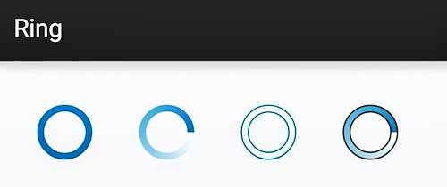

Android样式的开发:shape篇
原创文章，转载请注明：转载自Keegan小钢
并标明原文链接：http://keeganlee.me/post/android/20150830
微信订阅号：keeganlee_me
写于2015-08-30
Android样式的开发:shape篇
Android样式的开发:selector篇
Android样式的开发:layer-list篇
Android样式的开发:drawable汇总篇
Android样式的开发:View Animation篇
Android样式的开发:Property Animation篇
Android样式的开发:Style篇
一个应用，应该保持一套统一的样式，包括Button、EditText、ProgressBar、Toast、Checkbox等各种控件的样式，还包括控件间隔、文字大小和颜色、阴影等等。web的样式用css来定义，而android的样式主要则是通过shape、selector、layer-list、level-list、style、theme等组合实现。我将用一系列文章，循序渐进地讲解样式的每个方面该如何实现。第一个要讲的就是shape，最基础的形状定义工具。
一般用shape定义的xml文件存放在drawable目录下，若项目没有该目录则新建一个，而不要将它放到drawable-hdpi等目录中。
使用shape可以自定义形状，可以定义下面四种类型的形状，通过android:shape属性指定：
- rectangle: 矩形，默认的形状，可以画出直角矩形、圆角矩形、弧形等
- oval: 椭圆形，用得比较多的是画正圆
- line: 线形，可以画实线和虚线
- ring: 环形，可以画环形进度条
rectangle
rectangle是默认的形状，也是用得最多的形状，一些文字背景、按钮背景、控件或布局背景等，以下是一些简单的例子：

实现上面的那些效果，都用到了以下这些特性：
solid: 设置形状填充的颜色，只有android:color一个属性
- android:color 填充的颜色
padding: 设置内容与形状边界的内间距，可分别设置左右上下的距离
- android:left 左内间距
- android:right 右内间距
- android:top 上内间距
- android:bottom 下内间距
gradient: 设置形状的渐变颜色，可以是线性渐变、辐射渐变、扫描性渐变
- android:type 渐变的类型
- linear 线性渐变，默认的渐变类型
- radial 放射渐变，设置该项时，android:gradientRadius也必须设置
- sweep 扫描性渐变
- android:startColor 渐变开始的颜色
- android:endColor 渐变结束的颜色
- android:centerColor 渐变中间的颜色
- android:angle 渐变的角度，线性渐变时才有效，必须是45的倍数，0表示从左到右，90表示从下到上
- android:centerX 渐变中心的相对X坐标，放射渐变时才有效，在0.0到1.0之间，默认为0.5，表示在正中间
- android:centerY 渐变中心的相对X坐标，放射渐变时才有效，在0.0到1.0之间，默认为0.5，表示在正中间
- android:gradientRadius 渐变的半径，只有渐变类型为radial时才使用
- android:useLevel 如果为true，则可在LevelListDrawable中使用
- android:type 渐变的类型
corners: 设置圆角，只适用于rectangle类型，可分别设置四个角不同半径的圆角，当设置的圆角半径很大时，比如200dp，就可变成弧形边了
- android:radius 圆角半径，会被下面每个特定的圆角属性重写
- android:topLeftRadius 左上角的半径
- android:topRightRadius 右上角的半径
- android:bottomLeftRadius 左下角的半径
- android:bottomRightRadius 右下角的半径
stroke: 设置描边，可描成实线或虚线。
- android:color 描边的颜色
- android:width 描边的宽度
- android:dashWidth 设置虚线时的横线长度
- android:dashGap 设置虚线时的横线之间的距离
接下来说下实际怎么使用。以下是加了虚线描边的矩形的代码，文件命名为bg_rectangle_with_stroke_dash.xml，放在drawable目录下：
<?xml version="1.0" encoding="utf-8"?> <!-- android:shape指定形状类型，默认为rectangle --> <shape xmlns:android="http://schemas.android.com/apk/res/android" android:shape="rectangle"> <!-- solid指定形状的填充色，只有android:color一个属性 --> <solid android:color="#2F90BD" /> <!-- padding设置内容区域离边界的间距 --> <padding android:bottom="12dp" android:left="12dp" android:right="12dp" android:top="12dp" /> <!-- corners设置圆角，只适用于rectangle --> <corners android:radius="200dp" /> <!-- stroke设置描边 --> <stroke android:width="2dp" android:color="@android:color/darker_gray" android:dashGap="4dp" android:dashWidth="4dp" /> </shape>
接着在要使用的view里引用就可以了，例如本例中用做TextView的background：
<TextView android:layout_width="wrap_content" android:layout_height="wrap_content" android:layout_margin="8dp" android:text="加了虚线描边的矩形" android:textSize="16sp" android:textColor="@android:color/white" android:background="@drawable/bg_rectangle_with_stroke_dash" />
oval
oval用来画椭圆，而在实际应用中，更多是画正圆，比如消息提示，圆形按钮等，下图是一些例子：
上面的效果图应用了solid、padding、stroke、gradient、size几个特性。size是用来设置形状大小的，如下：
- size: 设置形状默认的大小，可设置宽度和高度
- android:width 宽度
- android:height 高度
数字0是默认的椭圆，只加了solid填充颜色，数字1则加了上下左右4dp的padding，后面的数字都是正圆，是通过设置size的同样大小的宽高实现的，也可以通过设置控件的宽高一致大小来实现。数字3加了描边，数字4是镂空描边，数字5是虚线描边，数字6用了radial渐变。注意，使用radial渐变时，必须指定渐变的半径，即android:gradientRadius属性。
以下是渐变的代码实现，文件为bg_oval_with_gradient.xml：
<?xml version="1.0" encoding="utf-8"?> <!-- android:shape指定形状类型，默认为rectangle --> <shape xmlns:android="http://schemas.android.com/apk/res/android" android:shape="oval"> <!-- padding设置内间距 --> <padding android:bottom="4dp" android:left="4dp" android:right="4dp" android:top="4dp" /> <!-- size设置形状的大小 --> <size android:width="40dp" android:height="40dp" /> <!-- gradient设置渐变 --> <gradient android:endColor="#000000" android:gradientRadius="40dp" android:startColor="#FFFFFF" android:type="radial" /> </shape>
引用的代码：
<TextView android:layout_width="wrap_content" android:layout_height="wrap_content" android:gravity="center" android:layout_margin="8dp" android:text="6" android:textSize="20sp" android:textColor="@android:color/black" android:background="@drawable/bg_oval_with_gradient" />
line

line主要用于画分割线，是通过stroke和size特性组合来实现的，先看虚线的代码：
<?xml version="1.0" encoding="utf-8"?> <shape xmlns:android="http://schemas.android.com/apk/res/android" android:shape="line"> <!-- 实际显示的线 --> <stroke android:width="1dp" android:color="#2F90BD" android:dashGap="2dp" android:dashWidth="4dp" /> <!-- 形状的高度 --> <size android:height="4dp" /> </shape>
画线时，有几点特性必须要知道的：
- 只能画水平线，画不了竖线；
- 线的高度是通过stroke的android:width属性设置的；
- size的android:height属性定义的是整个形状区域的高度；
- size的height必须大于stroke的width，否则，线无法显示；
- 线在整个形状区域中是居中显示的；
- 线左右两边会留有空白间距，线越粗，空白越大；
- 引用虚线的view需要添加属性android:layerType，值设为"software"，否则显示不了虚线。
ring
首先，shape根元素有些属性只适用于ring类型，先过目下这些属性吧：
- android:innerRadius 内环的半径
- android:innerRadiusRatio 浮点型，以环的宽度比率来表示内环的半径，默认为3，表示内环半径为环的宽度除以3，该值会被android:innerRadius覆盖
- android:thickness 环的厚度
- android:thicknessRatio 浮点型，以环的宽度比率来表示环的厚度，默认为9，表示环的厚度为环的宽度除以9，该值会被android:thickness覆盖
- android:useLevel 一般为false，否则可能环形无法显示，只有作为LevelListDrawable使用时才设为true

第一个图只添加了solid；第二个图只添加了gradient，类型为sweep；第三个图只添加了stroke；第四个图添加了gradient和stroke两项特性。
以下为第四个图的代码：
<?xml version="1.0" encoding="utf-8"?> <shape xmlns:android="http://schemas.android.com/apk/res/android" android:innerRadiusRatio="3" android:shape="ring" android:thicknessRatio="9" android:useLevel="false"> <gradient android:endColor="#2F90BD" android:startColor="#FFFFFF" android:type="sweep" /> <stroke android:width="1dp" android:color="@android:color/black" /> </shape>
如果想让这个环形旋转起来，变成可用的进度条，则只要在shape外层包多一个rotate元素就可以了。
<?xml version="1.0" encoding="utf-8"?> <rotate xmlns:android="http://schemas.android.com/apk/res/android" android:fromDegrees="0" android:pivotX="50%" android:pivotY="50%" android:toDegrees="1080.0"> <shape android:innerRadiusRatio="3" android:shape="ring" android:thicknessRatio="8" android:useLevel="false"> <gradient android:endColor="#2F90BD" android:startColor="#FFFFFF" android:type="sweep" /> </shape> </rotate>
结尾
shape篇就讲到这里了，代码也已经放上github，地址：
https://github.com/keeganlee/kstyle.git
扫描以下二维码即可关注订阅号。
- 26条评论
- 2条新浪微博
赞一个
非常的赞
非常赞，这个系列的我转发下哈~
![[嘻嘻]](./Android样式的开发_shape篇_files/tootha_org.gif "[嘻嘻]")
我一直很好奇，这些内容在哪可以找到？
感谢钢哥在这方面的总结，已转载备用，基本上试了下效果，大多都是 ok 的只是在渐变属性的放射类型有点问题， <gradient android:type="radial"
android:gradientRadius="100"
android:centerX="0.1"
android:centerY="1"
android:startColor="@android:color/holo_orange_light"
android:centerColor="@android:color/holo_red_dark"
android:endColor="@android:color/holo_purple"/> 这里android:gradientRadius="100"不能加dp单位不然在5.0以下的手机渲染不出来。我没有5.0+的手机使用的是模拟器测试验证的。- 感谢钢哥在这方面的总结，已转载备用，基本上试了下效果，大多都是 ok 的只是在渐变属性的放射类型有点问题， <gradient android:type="radial"
android:gradientRadius="100"
android:centerX="0.1"
android:centerY="1"
android:startColor="@android:color/holo_orange_light"
android:centerColor="@android:color/holo_red_dark"
android:endColor="@android:color/holo_purple"/> 这里android:gradientRadius="100"不能加dp单位不然在5.0以下的手机渲染不出来。我没有5.0+的手机使用的是模拟器测试验证的。
那可能我测试的时候系统是5.0的
谢谢小钢哥的分享，赞
很好很全面，必须转起啊
很好的分享
我把代码放到Eclipse跑一遍，一个是paddingMode属性没有，这个应该是sdk的问题。另外一个就是shape下面的Ring会报错。bg_ring_with_gradient_rotate.xml这个rotote标签漏了子标签。
 aaa
aaa赞
- Android_XiaoBai
很想知道这些信息怎么在官网上查到的，一直不知道页面布局的东西在官网怎么查看
总结的很吊！
牛逼，忍不住要发个评论了。博主写博客太走心！
先膜拜一下博主，文章写的很不错。
但是在练习中发现一个问题。
Line中，线条的粗细和stroke下的width有关，貌似和size中的height并无关系。1、size的height必须大于stroke的width，否则，线无法显示。
实际发现，height小于width依然可以显示线条，只要height不为0即可。
<shape xmlns:android="http://schemas.android.com/apk/res/android"
android:shape="line">
<stroke
android:width="10dp"
android:color="@color/colorPrimary"
/>
<size android:height="1dp"/>
</shape>
2、size的android:height属性定义的是整个形状区域的高度
当组件的android:layout_height="wrap_content"时，设置size的android:height的高度会覆盖android:layout_height的值。这个终于明白了，谢谢博主。太赞了！经典！
- book
真是感谢
我想问一下如果想换进度条，要怎么引入到progerssBar中去呀？